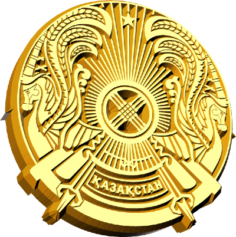

The emblem of Kazakhstan (Kazakh: Қазақстан елтаңбасы Qаzаqstаn eltаñbasy) was adopted on June 4, 1992. The designers of the emblem are Jandarbek Melibekov and Shota Walikhanov. About 245 projects and 67 description designs of the future arms took part in the final competition.[1] Like other post-Soviet republics whose symbols do not predate the October Revolution, the current emblem retains some components of the Soviet one, in this case, rising sun rays and star. Prior to 1992, Kazakhstan had an emblem similar to all other Soviet Republics.